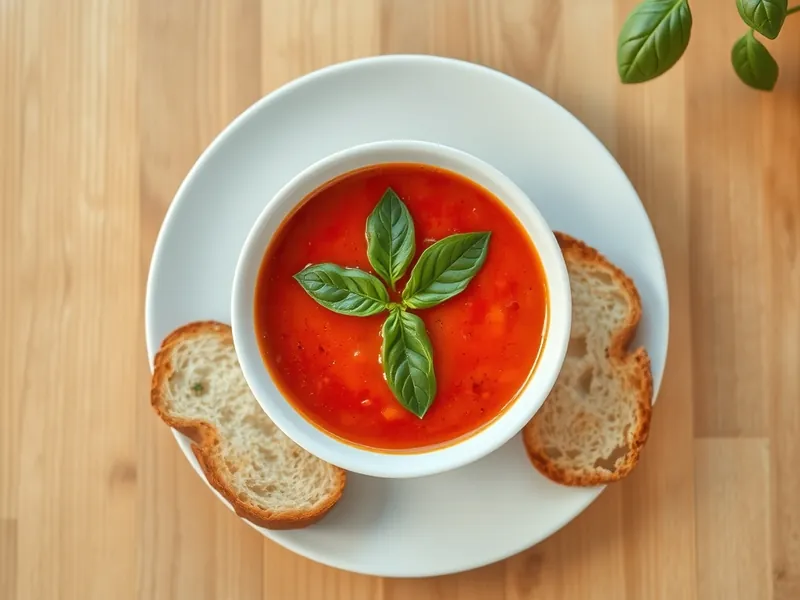

Фото: Иллюстрация ИИ, Cloudflare Workers AI
Томатный суп-пюре с базиликом
Густой суп из консервированных томатов с чесноком и свежим базиликом
25 мин3 порц.154 ккал на порциюБ 3 · Ж 9 · У 16Итальянская кухня
Продукты на 3 порц.
- Томаты в собственном соку2 шт
- Лук репчатый1 шт
- Чеснок2 зуб.
- Оливковое масло2 ст. л.
- Вода300 мл
- Сахар1 ч. л.
- Базилик0,5 пучка
- Соль0,5 ч. л.
- Перец чёрный молотыйпо вкусу
- Хлеб белый по желанию2 шт
Как готовить
- Мелко нарежьте лук и чеснок. Обжарьте в оливковом масле на среднем огне 5 минут, пока лук не станет мягким и прозрачным.
- Добавьте томаты вместе с соком, воду, сахар и соль. Доведите до кипения.
- Варите на слабом огне 12 минут под крышкой, пока помидоры полностью не разварятся.
- Положите половину листьев базилика и пробейте суп блендером до гладкости.
- Попробуйте на соль, разлейте, украсьте оставшимся базиликом. Подавайте с подсушенным хлебом.
Совет. Сахар нужен, чтобы убрать кислинку консервированных томатов. Для сливочного вкуса добавьте в тарелку ложку сметаны, но тогда суп уже не постный.